School ERP School Benefits & Overview
School ERP School Management is Multi-Branching education ERP System. This application will help the organization that has many Branch Schools and a SuperAdmin can control all the branches and staff. Each branch will be controlled by Admin. Information about different branches, cannot be viewed or modified by other branch users. All information will be separate and secure. It is effective and helpful for both types of schools, polytechnics and universities. There are language translation systems, Any user can change language and sessions and see all the systems in different languages and sessions record.
Multiple branch systems will save your time and money, just one solution.
School ERP Multi-Branch School ERP system provides the role of 7 users - Superadmin, Admin, Teacher, Accountant, Librarian, Student and their Parent.
Superadmin Panel
Login to the first Superadmin account.
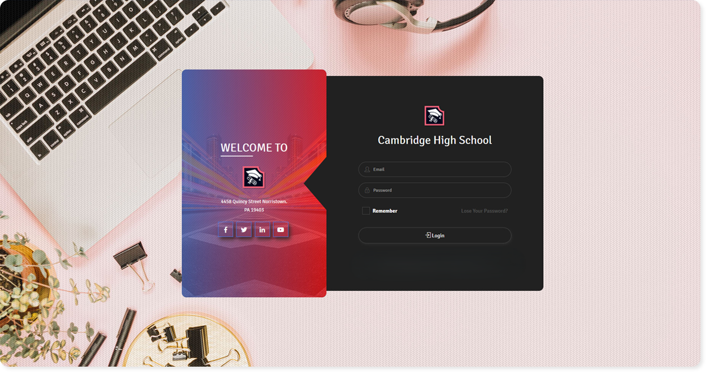
After successful login you will see the Super Admin Dashboard. You will find all the features of the Navigational overview on the screen.
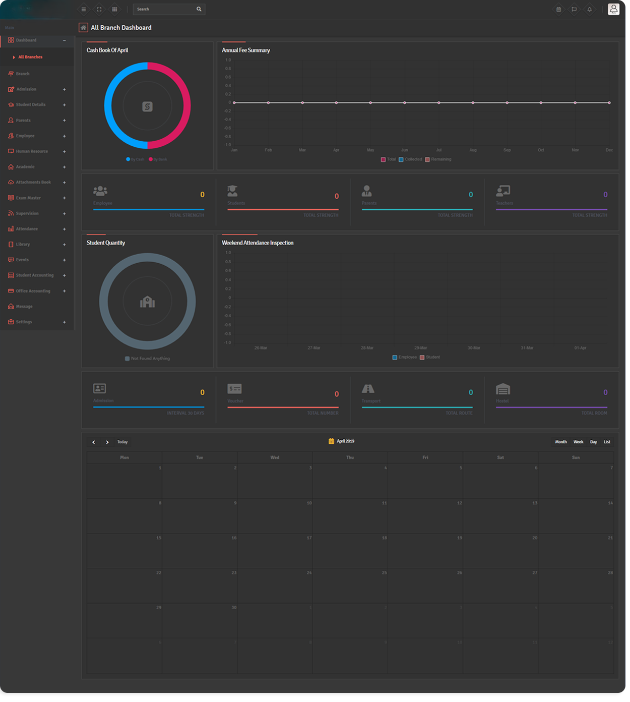
Go to the SuperAdmin Navigation Bar Settings > Global Settings within General Settings / Theme Settings / Logo and you can update your information.
* Note: Global settings are applicable for All Branches. Admin can not change this setting.
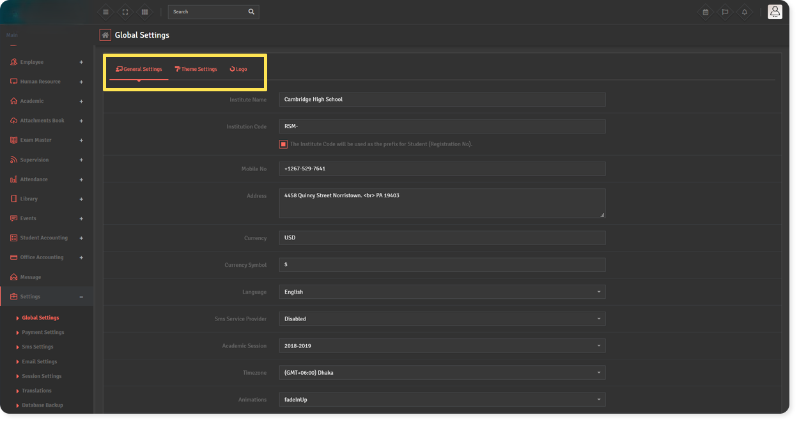
Systems Theme setting.
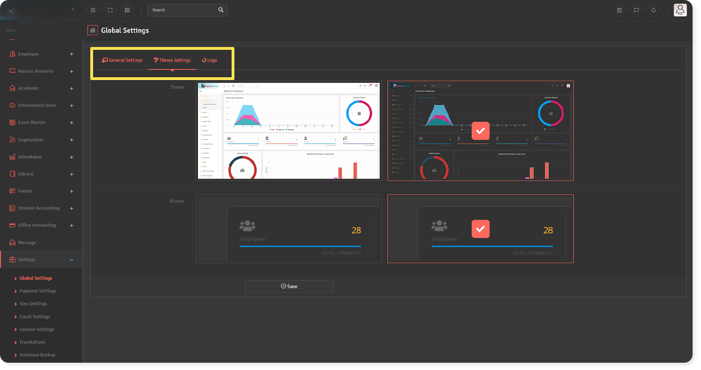
Systems Logo setting.
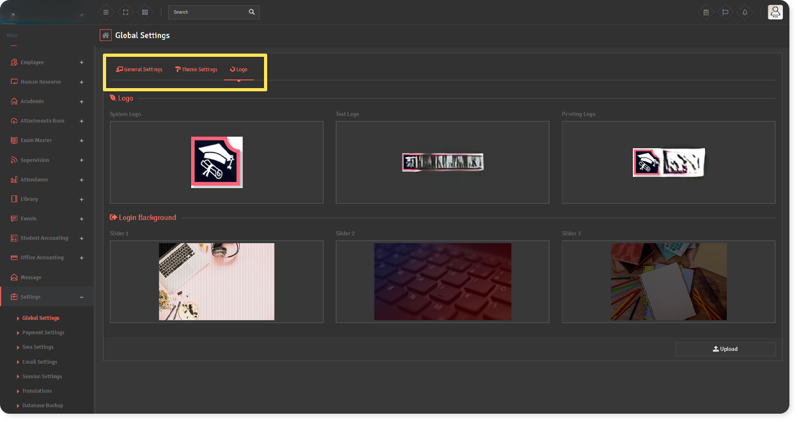
After updating all the settings and logos, you first need to add a Branch.
Add Branch :
- Login as Superadmin.
- Superadmin can maintain and create the Branch.
- First you have to create a new Branch, click the Branch > Create Branch tab and fill out all the information and click the Save button.
* Note : Admin can't manage branch information.
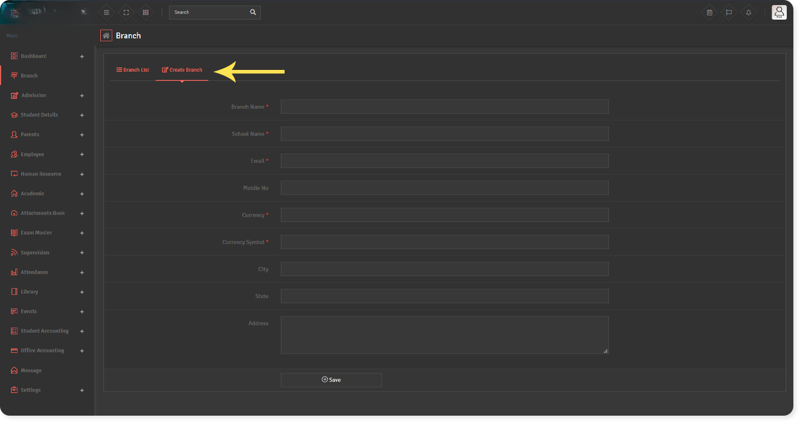
Add Sections :
- Login as Superadmin / Admin.
- For adding sections go to Academic > Class & Section > Control Classes click tab right side 'Section' and fill up form and click save button.
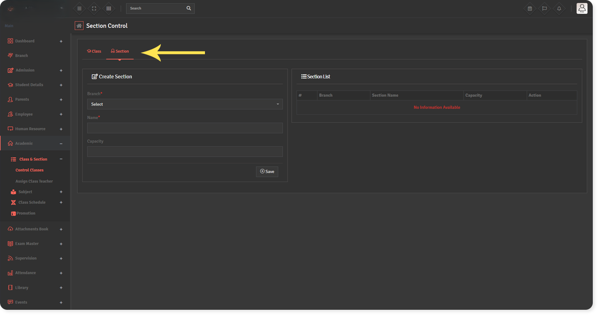
Add Class :
- Login as Superadmin / Admin.
- For adding class go to Academic > Class & Section > Control Classes click tab right side 'Class' and fill up form and click save button.
- You can set up multiple Section. (Example : For Class 1 can choose for Section A, Section B & Section C)
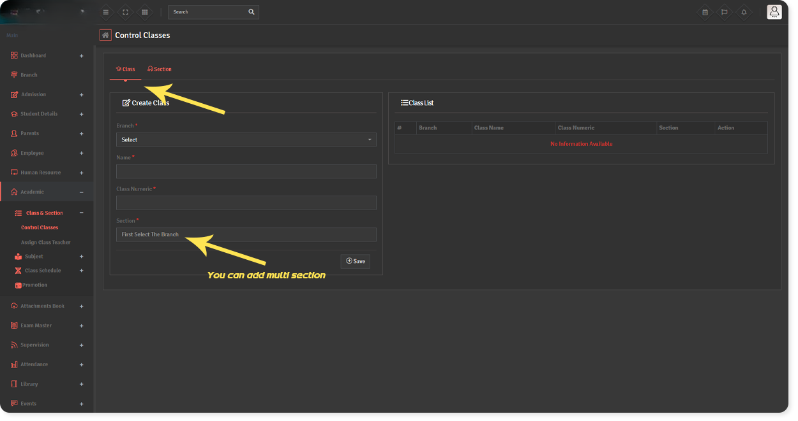
Assign Class Teacher :
- Login as Superadmin / Admin.
- For adding class go to Academic > Class & Section > Assign Class Teacher select Class and Section then select Class Teacher and click on Save button.
- You must first add teachers to add Class Teacher.
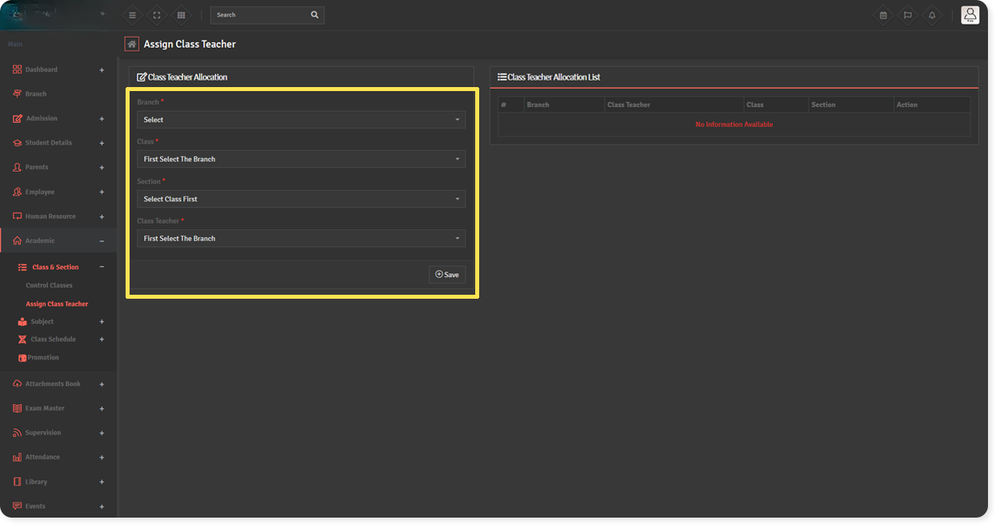
Student Category :
- Login as Superadmin / Admin / Teacher.
- For Student Addmission First we will add Student Category then take Student Admission then search Students List.
- Go to Admission > Category Add all student categories here. Student categories can be caste, community or group wise.
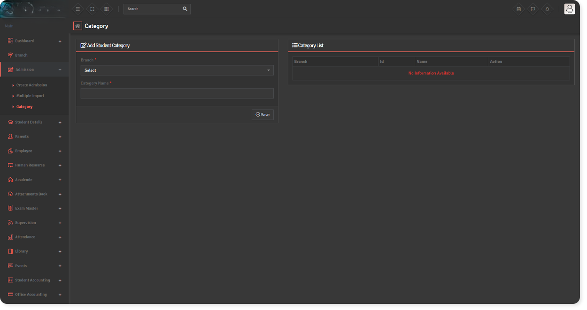
Student Addmission :
- Login as Superadmin / Admin / Teacher.
- For Student Addmission Go to Admission > Create Admission and fill form...
- 01. Academic Details- (Academic Year, Register No, Roll, Admission Date, Class, Section, Category)
- 02. Student Details - First Name, Last Name, Blood group, Gender, Date Of Birth and etc..(This * symbol means value is required).
- 03. Login Details - Login email and Login password
- 04. Guardian Details - Parent information already available check on "Guardian Already Exist" and select "Guardian" in list, otherwise fillup Guardian information.
- 05. Transport Details - You can select student Transportation routes and Vehicles no, otherwise skip this.
- 06. Hostel Details - You can select student Hostel and Room, otherwise skip this.
- 07. Previous School Details - The details of the previous school are not mandatory.
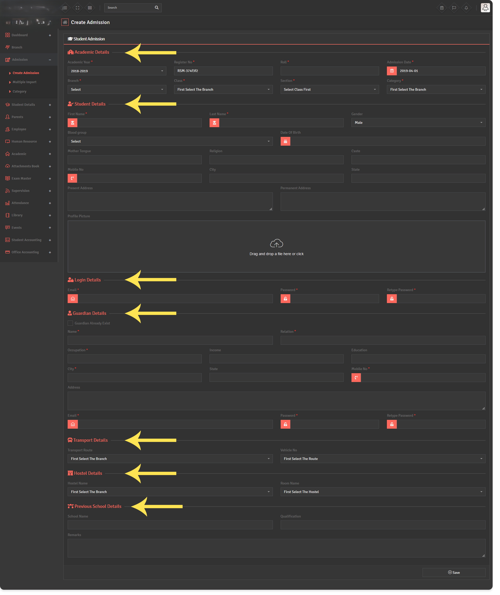
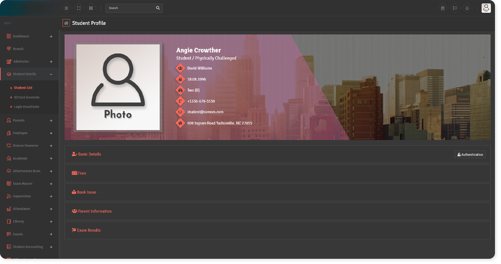
Multiple Import :
- Login as Superadmin / Admin
- For Student Addmission Go to Admission > Multiple Import
- Follow the instructions inside the page. Multiple students have been successfully added and will get a great deal of information on the student list completely.
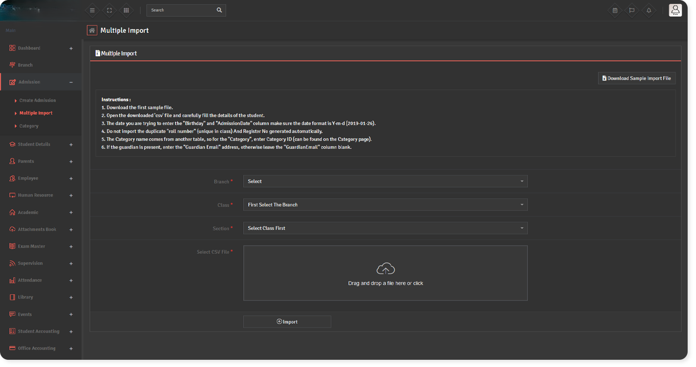
Student Details :
- It maintain Student List, ID Card Denerate and Login Deactivate.
- Go to Student Details > Student List inside page has Student list click and open the selecting field as like Branch, Class, Section and press search button.
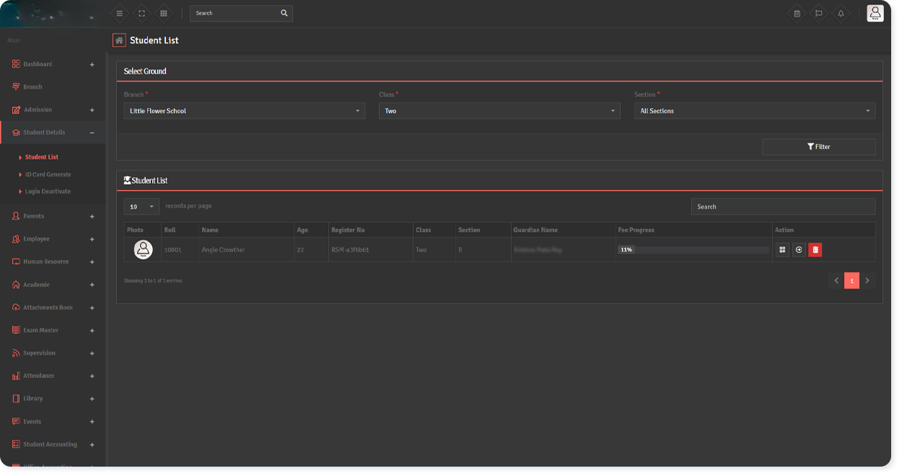
Add Employee :
- Login as Superadmin / Admin.
- Superadmin and Admin can create, edit and delete employee.
- Designation and Department for Employees to be added will be must required.
- For adding employee Go to Employee > Add Employee And fill up all information and click Save button.
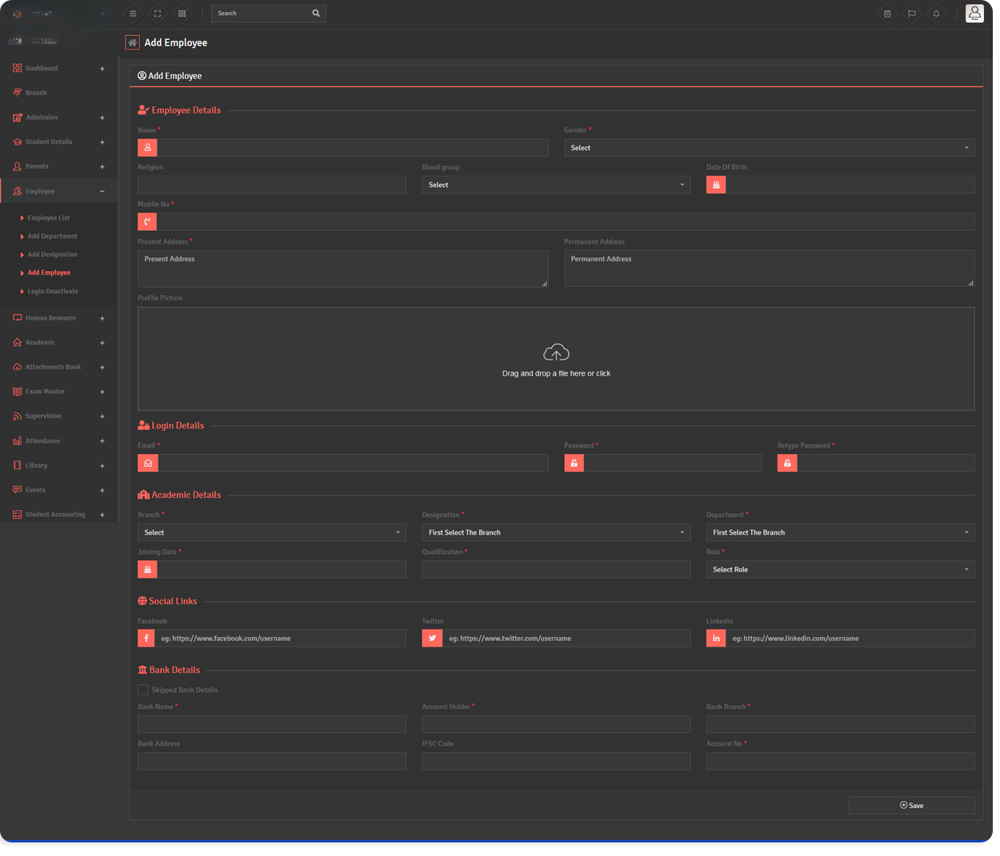